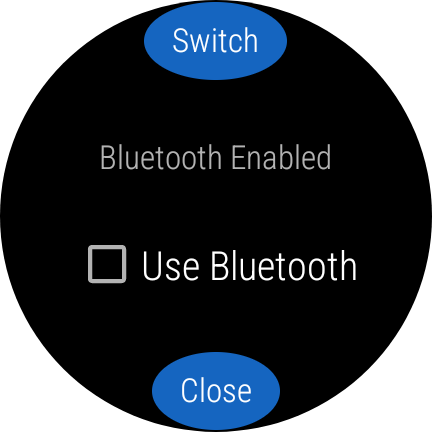
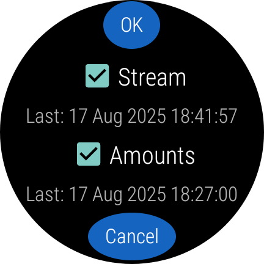

In WearOS Juggluco, under left menu→Sensor→Switch, you can directly connect the watch with the sensor and configure to enter numbers on the watch.
This setting is different from simply setting “Use Bluetooth” because the mirror connection on the watch is also reversed and when watch and phone are again within Bluetooth reach, a message is sent to the phone to stop connecting with the sensor and also reverse the mirror connection for Stream and Amounts.
This switch is only meant for the circumstance that you forgot to do it on your phone before going away with only your watch. It is much better to do under left menu→Watch→WearOS config on your phone.
Under Stream is written the date and time of the last stream value present on the watch. If you switch the stream values to the watch and not all data on the phone is sent to the watch, these will never been received by the watch. With Libre 2 sensors this results in missing values on the watch and after watch and phone are connecting again, also on the phone. When connected with sensors with backfill (Libre3, Dexcom G7/ONE+ and Sibionics) this will only result in the sensor sending the data a second time.
Under Amounts is the date and time of the last amount present on the watch. When not all data is present on the watch, they will be lost forever after switching Amounts. The amounts on the phone will also be overridden after phone and watch reconnect.

